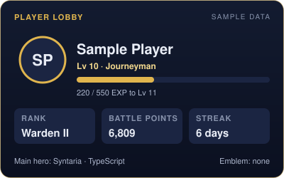
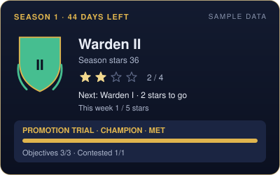
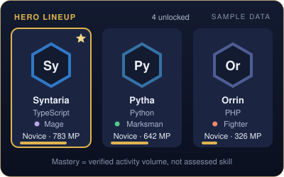
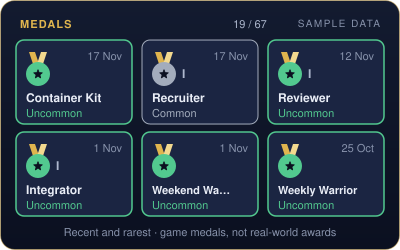
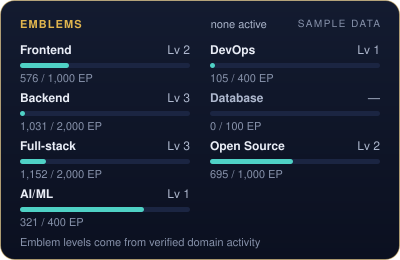
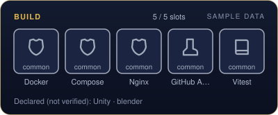

⚔️ GitHub Legends
Sample data. This block was generated from fixtures. It is not a real player's progress.


Level 10 · Warden II · Season 1 (44 days left) · 6,809 BP
📊 Player statistics: 205 commits · 16 merged PRs · 11 reviews
| Statistic | Value | Source |
|---|
| Qualifying commits | 205 | ✔ verified |
| Merged pull requests | 16 | ✔ verified |
| Peer reviews | 11 | ✔ verified |
| Issues opened / resolved | 0 / 4 | ✔ verified |
| Releases | 2 | ✔ verified |
| Battles (victories, MVP) | 41 (41, 8) | Σ derived |
| Quests completed | 94 | Σ derived |
| Campaigns completed | 2 | Σ derived |
| Medals | 19 / 67 | Σ derived |
✨ Level 10 · Journeyman — ▰▰▰▰▱▱▱▱▱▱ 40% · 220 / 550 EXP · 330 EXP to level 11
🛡 Warden II — 2 ★ to Warden I · 1/5 ★ this week · Champion trial: objectives 3/3, contested 1/1 (met)
🗓 Season 1 · 1 Oct – 31 Dec 2026 · 44 days left · 41 battles, 41 victories, 8 MVP


🦸 Heroes: 4 unlocked · 0 discovered · main: Syntaria (TypeScript) · technology usage, not proof of expertise
🏅 Medals (game achievements): 19 of 67 earned · latest: Container Kit (17 Nov) · closest: Streak I 6/7
🗡 Today's quests as of 17 Nov 2026, 00:17 WIB
- ☐ Victory Lap: Win today's battle (score ≥ 30). · 0/1 · +15 BP
- ☐ Contested Ground: Complete 1 contested objective. · 0/1 · +25 BP
- ☐ Hero Training: Commit to a repo where your main hero's technology share is ≥ 10%. · 0/1 · +15 BP
This week · Dedication 1/5 days
- ☐ Siege: Get 3 qualifying PRs merged. · 1/3 · +120 BP
- ☐ Steady Hands: Win 4 battles (Victory or MVP). · 1/4 · +100 BP
- ☐ Ship Day: Publish 1 qualifying release. · 0/1 · +150 BP
Season contracts: Season Regular (done) · Bridge Builder (done)
Featured campaign · Path of the Hero: step 4/4, Main hero reaches Adept (0/1) · +250 BP
🗺 World map: River of Reviews (2/3)
![Sample data. Sample Player, level 10, rank Warden II. You are at River of Reviews. Next: reach level 20 to unlock Citadel of Releases. 2% of the way to the next region's level gate. Main path, bottom to top: Starter Village completed, 3 of 3; Forest of Branches completed, 3 of 3; River of Reviews: current region, 2 of 3; Citadel of Releases locked until level 20; Peaks of Mastery locked until level 35; Throne of Eternity locked until level 50. Domain regions: Lantern Spires 1 of 3; Iron Forge 1 of 3; Twin Bridges 1 of 3; Observatory of Patterns 1 of 3; Harbor of… Full region list below.](assets/legends/dark/world-map.svg)
Sample data.
You are here: River of Reviews (2/3) — next: reach level 20 to unlock Citadel of Releases
Upcoming: Citadel of Releases at Lv 20 · Peaks of Mastery at Lv 35
| Region | Status | Progress |
|---|
| Starter Village | ✅ Completed | 3/3 |
| Forest of Branches | ✅ Completed | 3/3 |
| River of Reviews | 📍 Current | 2/3 (First verified ally not available yet) |
| Citadel of Releases | 🔒 Lv 20 | 2/3 |
| Peaks of Mastery | 🔒 Lv 35 | 0/3 |
| Throne of Eternity | 🔒 Lv 50 | 0/3 |
| Lantern Spires · Frontend | Unlocked | 1/3 |
| Iron Forge · Backend | Unlocked | 1/3 |
| Twin Bridges · Full-stack | Unlocked | 1/3 |
| Observatory of Patterns · AI/ML | Unlocked | 1/3 |
| Harbor of Pipelines · DevOps | Unlocked | 1/3 |
| Open Commons · Open Source | Unlocked | 1/3 |
🎓 Hero mastery: 4 heroes
| Hero | Tier | Mastery points |
|---|
| Syntaria ★ · TypeScript | Novice | 783 / 1000 MP to Adept |
| Pytha · Python | Novice | 642 / 1000 MP to Adept |
| Orrin · PHP | Novice | 326 / 1000 MP to Adept |
| Quillon · JavaScript | Novice | 178 / 1000 MP to Adept |
Mastery reflects verified activity volume, not assessed skill.
🔰 Emblems: no active emblem

| Emblem | Level | Emblem points |
|---|
| Frontend | Lv 2 | 576 / 1000 EP to level 3 |
| Backend | Lv 3 | 1031 / 2000 EP to level 4 |
| Full-stack | Lv 3 | 1152 / 2000 EP to level 4 |
| AI/ML | Lv 1 | 321 / 400 EP to level 2 |
| DevOps | Lv 1 | 105 / 400 EP to level 2 |
| Database | Lv 0 | 0 / 100 EP to level 1 |
| Open Source | Lv 2 | 695 / 1000 EP to level 3 |
🎒 Equipment: 5/5 build slots · 5 tools

| Tool | Tier | Evidence |
|---|
| GitHub Actions | common | verified in 1 repo |
| Docker | common | verified in 1 repo |
| Compose | common | verified in 1 repo |
| Nginx | common | verified in 1 repo |
| Vitest | common | verified in 1 repo |
✎ Declared, not verified: Unity · blender
A detected tool shows that it is configured in a project, not proficiency.
📜 Battle history: last 10 battles
| Date | Result (score) | Highlights |
|---|
| 16 Nov | ★ Victory (90) | 5 commits · 1 PR merged · 1 review |
| 15 Nov | ★ Victory (90) | 3 commits · 1 PR merged |
| 14 Nov | ★ Victory (55) | 6 commits |
| 13 Nov | ★ Victory (40) | 4 commits |
| 12 Nov | ★ Victory (85) | 7 commits · 1 review |
| 11 Nov | ★ Victory (65) | 5 commits · 1 PR merged |
| 9 Nov | ★ Victory (55) | 6 commits |
| 8 Nov | ★★ MVP (125) | 4 commits · 1 PR merged · 1 review |
| 7 Nov | ★ Victory (60) | 7 commits |
| 6 Nov | ★ Victory (65) | 5 commits · 1 PR merged |
🤝 Squad and collaboration: 9 verified collaborators
- Pull requests merged after another person's approval: 7
- Pull requests merged in repositories the player does not own: 0
- Peer reviews on other people's pull requests: 11
- Issues opened by others and resolved by the player: 4
Verified allies need the squad system, which is not available yet; no ally is shown.
🔗 Player: @sample-player · Most active public repositories (verified commit EXP): sample-player/alpha · sample-player/beta
✔ Verified · Σ Derived · ✎ Self-declared · Levels, ranks and mastery reflect verified activity, not assessed skill · How GitHub Legends works · updated 17 Nov 2026, 00:17 WIB